Machine Learning from Scratch: a Physicist's Road to Generative Models I
If you've ever fitted a model to data, a Breit-Wigner resonance, a spectral energy distribution, a pulsar timing residual, etc., you've already done machine learning. You wrote down a model, defined a goodness-of-fit criterion (hello, \( \chi^2 \)), and let an optimiser minimise it. That loop: \( \text{model} \rightarrow \text{loss} \rightarrow \text{minimise} \) is, without exaggeration, the engine behind every neural network, every generative model, and every AI system making headlines today.
The gap between "I can fit a Gaussian to a histogram" and "I understand how DINGO reconstructs gravitational wave posteriors" is smaller than it looks. What fills that gap is not exotic new mathematics, it's the same least-squares logic you already know, applied to increasingly expressive models.
This series closes that gap, step by step, starting from linear regression and ending at normalising flows, the class of generative models now used across gravitational wave astronomy, collider physics, and cosmological inference to learn exact probability densities in high dimensions. Along the way we'll pass through classification, neural networks, regularisation, density estimation, autoencoders, and variational autoencoders (VAEs), building each concept on the one before it.
Every step is accompanied by working Python code with detailed comments, no black boxes 😁, no hand-waving. By the end you'll not only know how these models work, you'll have implemented them yourself 😊.
Let's go. 🚀
Section 1: What Machine Learning Actually Is
Machine learning is not a new kind of mathematics; it is a systematic, scalable way of doing what physicists have always done: given some observations, find the model that describes them best. This section builds that idea from the ground up. By the end of it, you will have a precise definition of what "learning" means mathematically, an intuition for why the same formula governs everything from a straight-line fit to a deep neural network, and a working Python example you can run and modify yourself 😊.
The three ingredients
Every machine learning problem, no matter how complex, is assembled from three things: data, a model, and a loss function. Understanding each one clearly is the whole game.
Data
Data is simply a collection of observed pairs. We write each observation as (xi, yi),
where xi is the input, something we can measure or already know, and yi
is the target, and this is what we want to predict. In a physics context, xi might be the distance to a star
and yi its apparent luminosity. In a particle physics context, xi might be
a vector of detector signals and yi a label saying whether the event is signal or noise.
The specific meaning of x and y changes from problem to problem, but the structure is always
the same: N pairs of (input, output), collected from some process we are trying to understand.
It helps to think of xi as everything you hand to the model, and yi
as the answer you are trying to reproduce. The dataset is your ground truth,
(the true answer) that the model is accountable to.
Model
A model is a mathematical function that takes an input x and produces a prediction ŷ:
\[ \hat{y} = f(x; \theta) \]
The semicolon separates the input x from the parameters θ. Parameters are the internal
knobs of the model, the numbers it is allowed to tune in order to fit the data better. For the simplest possible model,
a straight line, the function is:
\[ \hat{y} = m x + b \]
and the parameter vector is just \( \theta = (m, b) \): the slope and the intercept. For a neural network with millions of neurons (neurons are the basic building blocks of neural networks, think of them as computational units that process information), \( \theta \) contains millions of weights and biases, but conceptually it is still the same thing, a list of tunable numbers that shape what the function does.
The key insight is that the model's structure (straight line, polynomial, neural network) is chosen by you based on your prior knowledge about the problem. The parameters \( \theta \) are what the computer learns.
Loss function
Once you have a model making predictions, you need a way to measure how wrong/correct those predictions are. That is the job of the loss function, written \( L(\theta) \). For regression, predicting a continuous number, the standard choice is the Mean Squared Error (MSE):
\[ L(\theta) = \frac{1}{N} \sum_{i=1}^{N} \left( y_i - \hat{y}_i \right)^2 \]
Read this formula carefully, because it will appear in one form or another throughout this entire series. For each data point, you compute the difference between the true value \( y_i \) and the model's prediction \( \hat{y}_i \). You square that difference (so that positive and negative errors do not cancel, and so that large errors are penalised more than small ones). Then you average across all \( N \) points. The result is a single number, a score of "how wrong" the model currently is.
When the predictions are perfect, every term in the sum is zero and \( L = 0 \). When the predictions are terrible, \( L \) is large. Everything the computer does during training is aimed at making \( L \) smaller (officially minimising the loss).
The central equation
With data, model, and loss in hand, the definition of machine learning becomes a single line:
$$\theta^* = \arg \min_{\theta} L(\theta)$$
This is read: "find the parameter values $\theta^*$ that make the loss as small as possible." The superscript star is conventional notation for "the best version of something." The expression arg min means "the argument that minimises" not the minimum value itself, but the $\theta$ that achieves it.
That is machine learning. Everything else: convolutional networks, attention mechanisms, normalising flows, etc., is an elaboration of this one idea. The model becomes more expressive, the loss function changes to suit the problem, the optimiser becomes more sophisticated, but the goal is always the same: minimise $L(\theta)$ over the data.
Visualising the full loop
The figure below shows this as a complete cycle. Starting from the data (observed pairs of $x$ and $y$), the model produces predictions $\hat{y}$. The loss function measures the gap between predictions and truth. An optimiser then nudges $\theta$ in the direction that reduces the loss, and the loop repeats.

*Figure 1 — The machine learning loop. The left panel shows the data (blue dots), the fitted line (orange), and the residuals (red vertical bars) — these residuals are exactly the terms being squared and summed in the MSE. The right panel shows the loss surface: a map of $L(\theta)$ over all possible values of slope and intercept. The cyan star marks where the optimiser lands; the white cross is the true parameter value. They nearly coincide.*
Notice how the residuals in the left panel connect directly to the loss surface on the right. Each red bar is one term $(y_i - \hat{y}_i)^2$ in the MSE formula. The loss surface is what you get when you evaluate that formula at every possible combination of slope and intercept, a landscape of error, and training is the process of rolling downhill to its minimum.
The physics connection
If you have worked with \( \chi^2 \) fitting before and if you are a physicist, you almost certainly have, this should feel deeply familiar, because it is the same thing. The \( \chi^2 \) statistic for a fit under Gaussian measurement noise is:
\[ \chi^2 = \sum_{i=1}^{N} \frac{(y_i - f(x_i; \theta))^2}{\sigma_i^2} \]
Compare this to the MSE formula. Apart from the weighting by \( \sigma_i^2 \) (the measurement uncertainty on each point), the structure is identical: sum of squared residuals, minimised over \( \theta \). When all \( \sigma_i \) are equal, minimising \( \chi^2 \) and minimising MSE give exactly the same answer.
More formally, minimising MSE under Gaussian noise is equivalent to maximising the likelihood \( p(\mathbf{y} \mid \mathbf{x}, \theta) \) a connection we will make precise later, when we talk about density estimation and the negative log-likelihood as a general training objective. For now, the takeaway is this: you already understand the loss function. It is \( \chi^2 \) in slightly different clothing.
What the code does
The hands-on material for this section is in a dedicated Jupyter notebook in the accompanying GitHub repository ↗. Each section of this series has its own notebook, so you can work through them independently and at your own pace without wading through unrelated code 😇.
The tutorial notebook ↗ for this section generates synthetic star luminosity data from a known linear law with added Gaussian
noise. Crucially, because we generated the data ourselves, we always know the true answer and can check whether
the model recovers it. From there it walks through three concrete exercises. It first manually evaluates the MSE
loss at a deliberately wrong set of parameters and then at the true parameters, so you can watch the loss change
as a number before any optimisation happens. It then hands the problem to sklearn's
LinearRegression, which finds \( \theta^* \) automatically, and prints a side-by-side comparison of the
recovered slope and intercept against the ground truth. Finally it produces two plots: the fitted line with
residuals drawn in red, and the full loss surface as a contour map over all possible slope-intercept combinations,
with the optimiser's solution marked on it.
The single most valuable thing you can do at this stage is run the notebook, read the printed numbers, and look at those two figures together. The goal is not to memorise the formulas but to build a concrete sense of what "reducing the loss" actually means: both as a number decreasing on screen and as a point sliding into a valley on the loss landscape.
A note on what comes next
Linear regression is intentionally the simplest possible case: one input, one output, two parameters, a convex loss surface with a single global minimum. Real problems however, are messier, the output might be a category rather than a number, the model might have millions of parameters, and the loss surface might be a highly non-convex landscape with many local minima. But the loop never changes. In the following section, we will take the first step beyond regression by asking what happens when \( y \) is a label (signal or noise?) rather than a continuous measurement and you will see that the answer requires only one new ingredient: a different loss function 🙃.